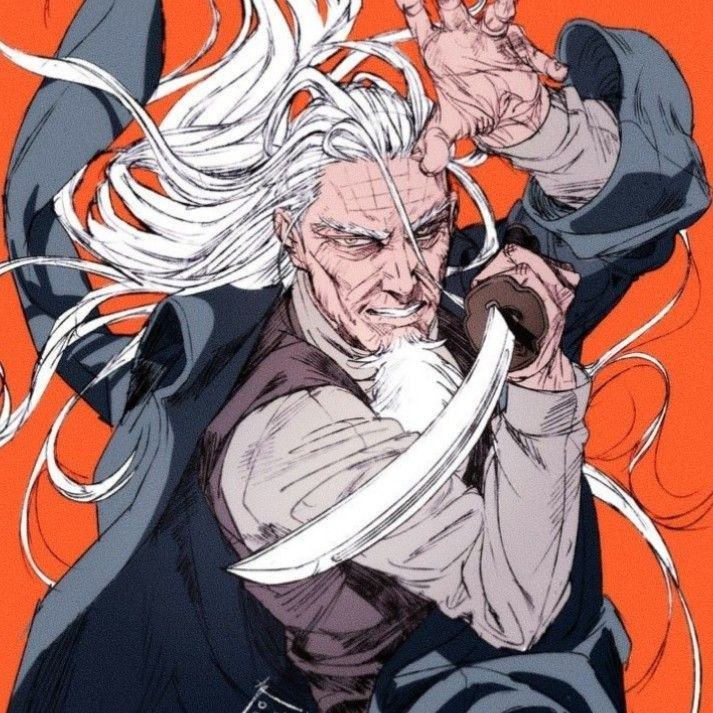

⚔ Império Jade
Uma terra de honra e tradição… onde o dever vale mais que a própria vida.

📜 Sobre o Império
O Império Jade preserva costumes antigos que moldam a vida de seu povo há séculos. Entre montanhas, florestas densas e vilarejos tranquilos, a cultura do império é construída sobre respeito, lealdade e dever. Os samurais são o símbolo máximo dessa filosofia, guerreiros que seguem códigos rígidos onde a honra vale mais que a própria vida. Mas nem tudo segue esse caminho — nas sombras, os ninjas operam longe dos olhos da sociedade, lidando com aquilo que não pode ser resolvido pela honra. E além dos homens, antigas lendas falam de demônios e espíritos que ainda caminham por essas terras.
🏛️ Tradição e Hierarquia
O Império Jade é governado por uma família imperial que mantém o poder há gerações. A autoridade do imperador é sustentada tanto pela tradição quanto pela lealdade dos clãs e guerreiros que servem ao império. A sociedade é fortemente hierárquica, com papéis bem definidos. Samurais, nobres e líderes locais ajudam a manter a ordem e proteger o território. A estabilidade do império depende do equilíbrio entre honra, disciplina e a capacidade de lidar com ameaças — tanto humanas quanto sobrenaturais.
📍 Locais Importantes
- • Kensei — A capital do império e centro político. Uma cidade marcada por tradição, arquitetura refinada e locais de grande importância cultural. Também é conhecida por suas fontes termais.
- • Floresta dos Demônios — Uma região envolta em mistério, onde lendas dizem que criaturas sombrias habitam. Sua proximidade com os Campos de Lótus levanta suspeitas sobre a origem dessas ameaças.
👥 Personagens Importantes

👑 Kensei Hirotaka
Imperador do Império Jade
Governante do Império Jade e patriarca da família Kensei, Hirotaka é conhecido por sua sabedoria e profundo respeito pelas tradições. Seu governo mantém o equilíbrio e a estabilidade do império há décadas.
Paciente e reflexivo, ele sempre busca o caminho mais honroso — mesmo quando esse caminho é o mais difícil.
“Um império não se mantém pela espada… mas pela honra de quem a carrega.”

⚔️ Takeda Ryuzen
Samurai Herói
Uma lenda viva do Império Jade, Takeda foi o maior caçador de demônios de sua geração, enfrentando ameaças que poucos ousariam encarar.
Hoje vive de forma discreta, mas ainda carrega a presença de alguém que já enfrentou o impossível.
Alguns dizem que ele passa os dias bebendo… poucos ousam testar se isso é verdade.